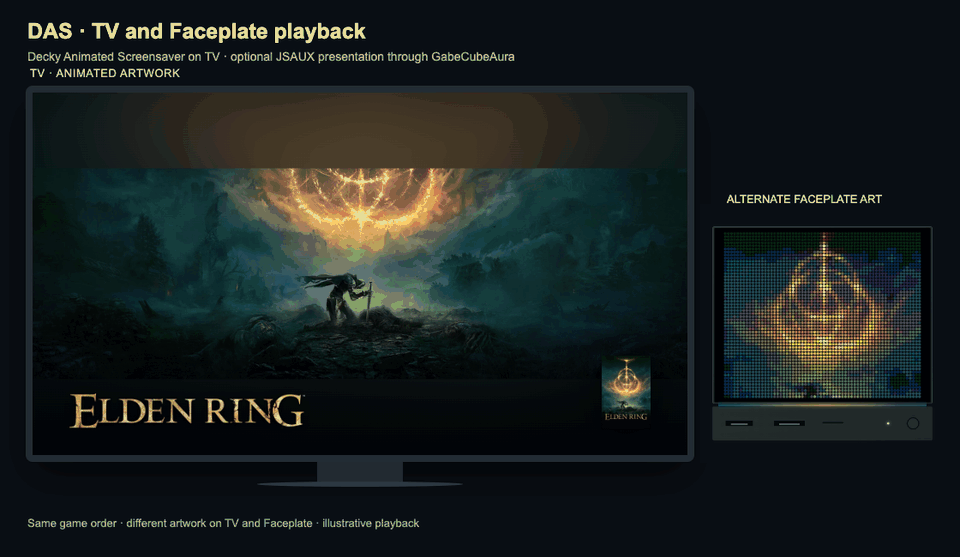

Add a JSAUX Faceplate with GabeCubeAura
Decky Animated Screensaver (DAS) creates a game-artwork collection for your television or Steam Deck display. On a Steam Machine, the optional GabeCubeAura (GCA) integration can show separately chosen game images on a JSAUX Pixel Matrix Faceplate while the television plays the collection.
Television playback works without GCA or a Faceplate. Add the integration when you want the second display; your TV collection remains useful on its own.

Same games, different artwork: animated backgrounds on TV, separately selected images on the Faceplate, and their colours extended onto the light bar. Scene changes are coordinated for this illustration.
What you need
- Decky Animated Screensaver installed through Decky Loader.
- For Faceplate output, a connected JSAUX Pixel Matrix Faceplate and a GCA version that supports the collection integration.
- Prepared artwork for your selected games. Online artwork browsing uses your personal SteamGridDB key; prepared media can be reused offline.
For connection, power and brightness, use the GCA Faceplate guide. GCA controls the matrix hardware; DAS chooses and prepares the screensaver collection.
Choose the games and artwork
Open My collection or Add games in DAS. Add the games you want, then choose their backgrounds, covers and logos. A television background and a Faceplate image can use different framing, so a good TV crop does not have to become a cramped matrix crop.
Use Choose Faceplate JSAUX image for a game's matrix image. Its image selection view includes the Faceplate crop preview. Changing artwork choices does not immediately rebuild or install the collection.
For an ordered presentation, open Manage collection → Reorder my collection. Press X to enter reordering, move the focused game with the arrows, then press X to save. Update the collection afterwards to apply the order to the installed player. Shuffle remains a separate playback choice.
Enable the optional output
Connect the Faceplate and open Settings → Faceplate JSAUX in DAS. Enable Show collection on Faceplate JSAUX. The section appears when the required hardware and GCA integration are available.
Choose Keep square · side borders to preserve the whole square image, or Fill Faceplate JSAUX · 64 × 54 crop to fill the matrix without stretching. You can choose a Faceplate transition such as Fade, Wipe, Slide or Dissolve.
These choices need a collection update before they become part of the installed screensaver. The Faceplate preview shows prepared media without sending it to the device.
Choose how the displays play
Extend the Faceplate colours onto the light bar
In GabeCubeAura → Settings → Display Light → Display, set During Steam screensaver to Faceplate extension. The bar then extends the colours of the prepared Faceplate image and returns to your usual lighting when the screensaver ends.
Under Faceplate image projection, choose Whole image for colours from the complete picture, or Bottom edge to continue its lower edge. The GIF above uses Whole image and the original colour saturation of 100%. Your global light-bar brightness still applies.
Coordinate the TV and Faceplate
In Playback mode, choose one of two approaches:
| Mode | What happens |
|---|---|
| Synchronised (experimental) | DAS coordinates the TV start with the prepared Faceplate collection. The displays use the same game order and time per game; TV shuffle is disabled for this mode. |
| Independent loop | The TV and Faceplate play independently. Set Faceplate JSAUX time per game for the matrix's own pace. |
Synchronised preparation is the default for a new configuration. Coordination does not guarantee frame-accurate playback or an instantaneous USB transfer. If the Faceplate cannot be ready within the start window, TV playback continues.
For a collection that cannot fit the synchronised preparation limits, DAS can automatically prepare compact batches for independent Faceplate playback. This keeps the selected games. It does not change your saved preference: another preparation can try synchronisation again if the collection fits. GCA handles the prepared batches during playback.
If scene changes appear offset on the physical displays, open the Faceplate section's Details → Visual alignment controls. Compare the running screensaver, exit it, adjust TV timing correction, then save and restart the screensaver. Positive values delay the TV; negative values bring it forward. This is a visual adjustment, not a guarantee of measured alignment.
Prepare and install the collection
- Save your artwork and playback choices.
- In My collection, select Prepare and install for the first installation, or the collection update action afterwards.
- Confirm preparation and installation. DAS prepares the TV media and enabled Faceplate output, reuses unchanged ready files and installs the result.
- Review the completion state. If an artwork source cannot be read, DAS tries available alternatives. Still images are used only when you allow them or explicitly choose one. A failed replacement keeps the previous installed collection available.
Opening a page, changing a crop or reordering games does not install those changes. Use the collection action when you are ready to apply them.
Select it in Steam
After installation, choose:
Steam → Settings → Customization → Screensaver → decky-animated-screensaver
Set the inactivity delay in Steam's Power settings. DAS cannot confirm that you selected the screensaver in Steam, and a preview does not activate it.
During the installed Steam screensaver, the player starts the prepared collection and requests its optional Faceplate output through GCA. When the screensaver ends, GCA returns to its current Home or in-game display. Its power, sleep and higher-priority display rules still apply.
If the Faceplate does not follow
Check the connection in GCA, then confirm that DAS's Faceplate output is enabled and included in the installed collection. Update the collection after changing artwork, framing, order or playback mode. A prepared preview is not the same as an installed collection or visible device playback.
If DAS reports independent playback, check whether it prepared automatic batches for that collection. The television can continue normally even when the matrix is disconnected or unavailable. See GCA troubleshooting for device connection, power and display ownership.
Created by Alyenax. You can support development on Ko-fi. Decky Animated Screensaver and GabeCubeAura are independent projects, not affiliated with, endorsed by or sponsored by Valve or JSAUX. Artwork and trademarks belong to their respective owners; see the demonstration credits.